Los puertos están asignados para convivir con otros proyectos en la misma máquina. El Postgres del portafolio no usa el 5432: ese puerto suele estar tomado.
Servicio
Puerto
Cómo se cambia
Postgres
5434
POSTGRES_PORT=5555 docker compose up -d
Adminer
8080
ADMINER_PORT=8081 docker compose up -d
API (NestJS)
3300
PORT en backend/.env
Sitio (Vite)
5173
npm run dev -- --port 5174
# 1. Base de datos y Adminer
docker compose up -d
# 2. Backend
cd backend
npm ci
npm run prisma:migrate # solo la primera vez
npm run seed && npm run seed:verify
npm run admin:bootstrap
npm run start:dev # API en http://localhost:3300
# 3. Frontend
cd ../frontend
npm ci && npm run dev # sitio en http://localhost:5173
Sesión para los curl. El panel usa una cookie httpOnly, pero la API también acepta Authorization: Bearer, que es más cómodo en consola. El login está limitado a 5 intentos por minuto y por IP.
El constructor: Identidad, Selección, Diseño y Publicación, con preview en vivo
Resumen de la última ejecución
5 de octubre de 2026, contra la base del seed: 14 perfiles curados y 15 experiencias.
30casos
30pasan
2defectos corregidos
26capturas
Los 30 casos pasan. TC-21 a TC-24 llegaron con el change add-curated-profile-lifecycle, verificados con e2e y, los dos primeros, en la app real; TC-25 a TC-27 (portada, formación y proyectos), con add-profile-content-admin; TC-28 a TC-30 (avisos antes de descartar cambios), con polish-builder-and-edge: los tres se ejecutaron el 8 de octubre de 2026 en la app real, contra el contenedor web. Los dos defectos que encontró esta ejecución, D-01 (el dashboard no mostraba las visitas de hoy) y D-02 (un 500 al omitir un campo obligatorio), están corregidos. Detalle en Defectos.
Estados
pasa
Ejecutado y verificado, con captura o transcripción.
falla
Ejecutado y el comportamiento real no es el esperado.
0 de 24 marcados en esta corrida
Marcá cada caso a medida que lo recorrés. Las marcas quedan en este navegador y no se comparten.
Los casos del backoffice están automatizados.docs/manual/suite-backoffice.ps1 ejecuta TC-12 a TC-20 contra la API, imprime el resultado real junto al esperado y borra todos los datos de prueba que crea, pase o falle.
cd docs/manual && pwsh ./suite-backoffice.ps1
Casos de la vista pública
Lo que ve quien recibe un link. No requieren sesión.
TC-01
La home resuelve el perfil completo
pasa
Pasos · Abrir http://localhost:5173/?lang=es.
Esperado · Se renderiza el perfil all con el hero, el badge de disponibilidad, los datos de contacto y la fila de métricas. El título del documento es Perfil Completo · <nombre>.
Pasos · Abrir / sin parámetros con el navegador en inglés, y después /?lang=es.
Esperado · Sin parámetro, el contenido sale en el idioma del Accept-Language y el selector marca EN. Con ?lang=es todo pasa a español, incluido el título del documento. Los datos no se duplican: es el mismo registro resuelto en otro idioma.
Mismo registro, idioma negociado por Accept-Language.
TC-03
Un perfil curado filtra el contenido
pasa
Pasos · Abrir /tech-lead-dotnet?lang=es.
Esperado · El titular pasa a ser el del perfil, se antepone su descripción al resumen general y las métricas bajan respecto de la home porque el contenido está filtrado por filterTags.
Cómo se comprueba el filtro sin mirar. Comparar las métricas con TC-01: en un perfil con filterTags: ["dotnet"] se pasa de 15 experiencias y 80 tecnologías a 7 y 57.
Esperado · El preset cambia la paleta completa en caliente, sin recargar ni reconstruir, y sidebar reorganiza la página en dos columnas. Lo guardado en el perfil no se modifica: es una vista alternativa que se puede compartir.
Parámetro
Valores
Por defecto
?lang=
es, en
Accept-Language, luego es. La API acepta ?locale=, con prioridad
El menú ofrece los demás perfiles, solo en la home
pasa
Pasos · En la home (/), abrir el desplegable Perfiles. Después abrir un perfil por su link, por ejemplo /tech-lead-dotnet.
Esperado · En la home, el menú lista los perfiles públicos, enumerados y no archivados, agrupados por roleType, cada uno con su techFocus debajo. En /:slug no hay menú.
Desde el change add-curated-profile-lifecycle el menú solo se monta en la home: quien recibe un link no ve los otros perfiles.
El desplegable en la home, agrupado por tipo de rol. En la misma ejecución, /tech-lead-dotnet no tenía el botón Perfiles.
TC-06
Un perfil protegido pide token
pasa
Precondición · Un perfil con visibility: PROTECTED y accessToken.
Esperado · La API responde 401 y la vista muestra el formulario de token, sin filtrar ningún dato del perfil.
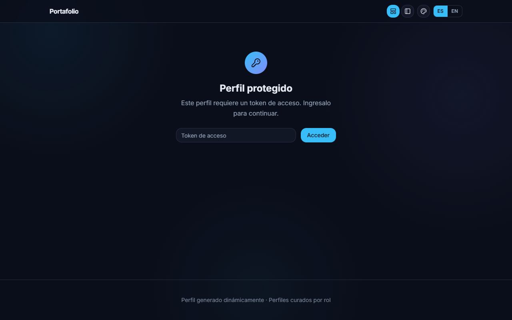
Nada del perfil se filtra antes de validar el token.
TC-07
Con el token correcto, el perfil resuelve
pasa
Pasos · Escribir el token y pulsar Acceder.
Esperado · El token pasa a la URL como ?token=, la API responde 200 y el perfil se renderiza. El link con el token es compartible tal cual.
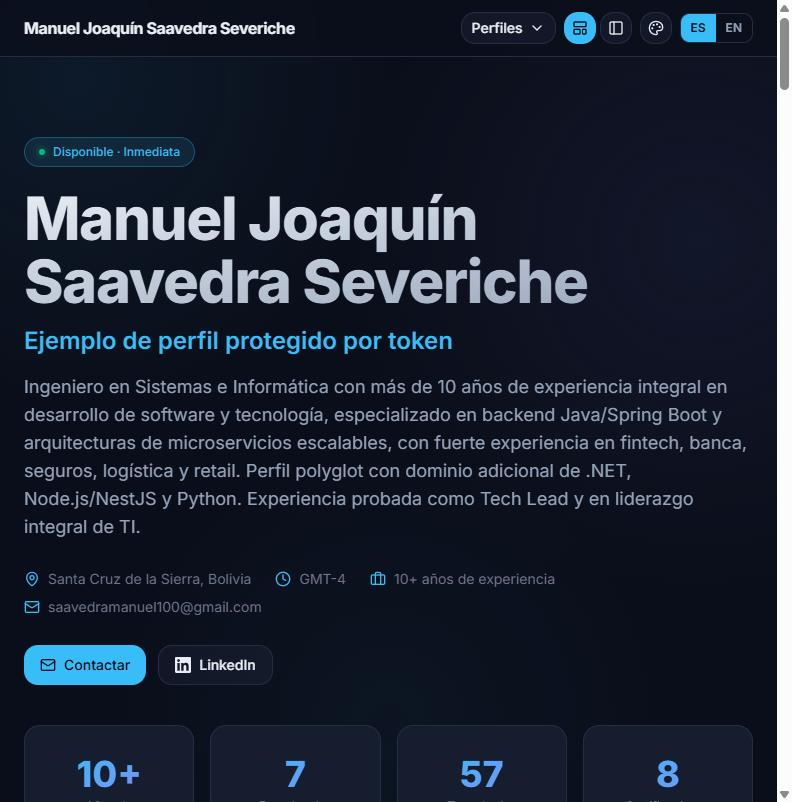
Resuelto, y con las métricas ya filtradas.
TC-08
Un slug inexistente o privado da 404
pasa
Esperado · La API responde 404 y la vista muestra el 404 propio. Un perfil PRIVATE responde exactamente igual, a propósito: un 403 confirmaría que el slug existe.
Indistinguible de un perfil privado.
TC-09
La vista funciona en móvil
pasa
Esperado · Una sola columna, el menú colapsa en hamburguesa, los selectores de tema e idioma siguen accesibles y no hay scroll horizontal.
375 × 812.
TC-10
Los códigos de estado por visibilidad
pasa
curl -s -o /dev/null -w '%{http_code}\n' $API/api/curated-profiles/demo-protegido
# 401 ← PROTECTED sin token
curl -s -o /dev/null -w '%{http_code}\n' "$API/api/curated-profiles/demo-protegido?token=EL-TOKEN"
# 200 ← PROTECTED con token
curl -s -o /dev/null -w '%{http_code}\n' $API/api/curated-profiles/no-existe
# 404 ← inexistente, y lo mismo devuelve un PRIVATE
El token también viaja en la cabecera X-Access-Token. En los logs el ?token= sale censurado, y Referrer-Policy: no-referrer evita que se filtre al navegar a un enlace externo.
Casos del backoffice
Requieren sesión. Los nueve se recorrieron en el panel real el 5 de octubre, con la base del seed.
TC-11
Entrar al panel
pasa
Esperado · /admin redirige a /admin/login. Tras entrar, se llega al Dashboard y se vuelve al destino original si se había pedido otra ruta.
La sesión es una cookie httpOnly: el cliente nunca guarda el JWT y el estado se deriva de GET /api/auth/me. Al expirar, el panel vuelve al login en la siguiente petición.
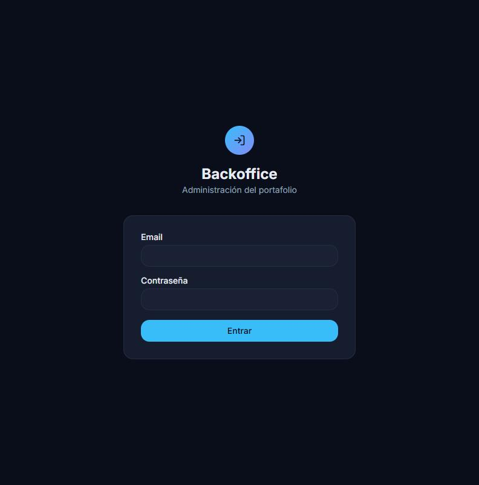
El panel vive en el mismo frontend, en un chunk aparte.
TC-12
Crear un perfil curado para una vacante
pasa
Pasos · /admin/perfiles → Nuevo perfil → pestaña Identidad: slug en kebab-case (es la URL y se valida), title, headline y description en ES y EN, roleType y techFocus. Guardar.
curl -s -X POST $API/api/admin/curated-profiles -H "$AUTH" \
-H 'Content-Type: application/json' -d '{
"slug": "acme-tech-lead",
"title": { "es": "Tech Lead .NET", "en": "Tech Lead .NET" },
"headline": { "es": "14 años liderando equipos .NET",
"en": "14 years leading .NET teams" },
"roleType": { "es": "Tech Lead", "en": "Tech Lead" },
"techFocus": ".NET",
"visibility": "PRIVATE"
}' | jq '{id, slug, visibility}'
Observado
POST /api/admin/curated-profiles -> 201 slug=suite-demo visibility=PRIVATE
defaults: accentColor=#1A365D layout=classic views=0 filterTags=[]
POST con el mismo slug -> 409
POST con un campo fuera del DTO -> 400
POST omitiendo "title" (obligatorio) -> 500 ❌ antes del arreglo de D-02
POST omitiendo "title" (obligatorio) -> 400 ✅ después: "title should not be null or undefined"
Recomendado. Crealo PRIVATE y pasalo a PUBLIC recién cuando esté listo. Un PRIVATE devuelve 404, así que nadie lo encuentra mientras lo armás.
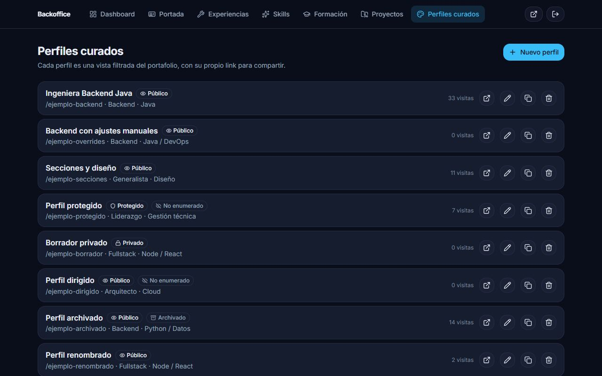
Slug, visibilidad, taxonomía y visitas de cada perfil.Pestaña Identidad, con la vista previa en vivo: 12 experiencias · 10 categorías · 1 proyectos ya filtradas.
TC-13
Elegir qué entra con tags y overrides
pasa
Mecanismo
Efecto
filterTags
Entra el item que comparta al menos un tag. Vacío = entra todo
includeIds
Fuerza la inclusión. Solo funciona con items visibles
excludeIds
Fuerza la exclusión. Siempre gana, incluso sobre includeIds
Pasos · Pestaña Selección: los tags aparecen como chips y cada experiencia tiene Incluir y Excluir. El preview se recalcula con cada clic, y varios clics seguidos se acumulan.
Observado · con dos experiencias de prueba que comparten el tag suite-tag, una visible y otra oculta:
filterTags vacío -> 16 experiencias (entra todo lo visible)
filterTags=[suite-tag] -> 1; la visible entró, la oculta no
includeIds sobre una experiencia oculta -> no entró (no fuerza invisibles)
mismo id en includeIds y excludeIds -> no entró (excludeIds siempre gana)
El orden de salida siempre es cronológico: startDate descendente, order ascendente como desempate. No se reordena item por item, a propósito.
Los tags activos arriba y el universo disponible debajo, sacado de los datos reales.
Dos reglas. Una sección con datos que no figure en sectionsOrder se agrega al final; para ocultarla hay que ponerla en sectionsHidden. Una sección sin datos no se renderiza aunque esté en el orden.
Desde el change unify-section-catalog el catálogo es uno solo, con 9 secciones, y el backend aplica el relleno: sections trae al final, en orden canónico, las secciones con datos que no figuran en el orden ni están ocultas. La transcripción de arriba es anterior al change. Un id fuera del catálogo ahora responde 400.
projects y presence quedan en las posiciones 8 y 9 porque el orden guardado trae solo siete.
TC-15
Personalizar el tema
pasa
Pasos · Pestaña Diseño, bloque Tema: tema base entre los cinco presets, ocho controles de color (Fondo, Fondo suave, Tarjeta, Borde, Texto, Texto tenue, Acento y Acento 2), densidad Compacta / Cómoda / Amplia, y Restablecer.
Esperado · El preview cambia al instante, porque los tokens se aplican como variables CSS --t-* en el contenedor del preview y no en el documento. Y solo se guardan las diferencias contra el tema base, en themeOverrides: si mañana cambia el preset, el perfil hereda la mejora y conserva su ajuste.
GET /api/admin/themes -> 5 temas: corporate, elegant, minimal, modern-dark, modern-light
PATCH themeOverrides -> se guarda {"colors":{"accent":"#5B2C87"}}, solo la diferencia
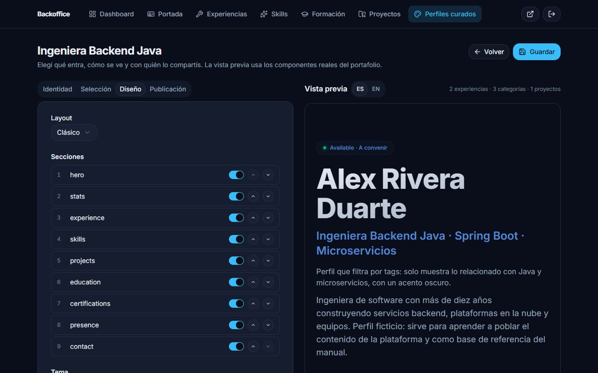
Tema base, los ocho colores con su hexadecimal, y Restablecer para volver al preset.
TC-16
Publicar, proteger o esconder
pasa
Un perfil tiene tres ejes independientes, y la pestaña Publicación los presenta por separado:
Eje
Decide
Dónde se cambia
Visibilidad
quién puede abrir el perfil por su link
selector Visibilidad
Enumeración (listed)
si se enumera en el menú de la home, el listado público y el sitemap; no cambia el acceso
interruptor Enumerar en la home y el sitemap (TC-23)
Archivado (archivedAt)
si sigue vivo: archivado responde 404 siempre y gana sobre los otros dos
Observado · recorriendo las tres visibilidades sobre el mismo perfil:
PUBLIC sin token -> 200
PROTECTED sin token -> 401
PROTECTED con token -> 200
PRIVATE sin token -> 404
PRIVATE con token -> 404 (no revela que existe)
slug inexistente -> 404 (indistinguible del PRIVATE)
el PRIVATE figura en el sitemap -> no
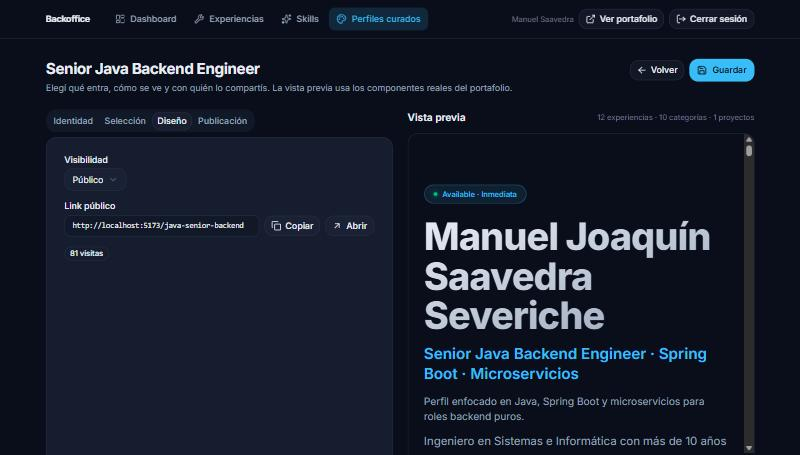
Visibilidad, el link público con copiar y abrir, y el contador de visitas.
TC-17
Previsualizar sin guardar
pasa
El preview no lo calcula el navegador: lo resuelve el backend con el mismo servicio que la ruta pública (CuratedProfileComposer), para que no puedan divergir.
Observado · tras previsualizar con layout: sidebar y otros filterTags, el perfil guardado conserva classic y sus tags originales. No persiste nada.
Idioma de la vista previa · en el constructor, el conmutador ES / EN del panel pide el preview en el otro idioma (?locale=en). Es estado de vista: no se guarda ni viaja en el guardado, y al recargar vuelve a español. Volver al idioma anterior no repite la petición.
Aviso de faltantes · el preview devuelve además missingTranslations: los campos bilingües vacíos en el idioma pedido, que caerían al español. La pestaña Publicación, junto al link público, los muestra con el conteo y la lista agrupada por entidad; si no falta nada lo dice en una línea («Sin faltantes de traducción en EN»). Es informativo: no impide guardar ni publicar. Un texto igual en ambos idiomas (Tech Lead, .NET) no cuenta como faltante, y la ruta pública no trae el informe.
Cuidado con los nombres. Lo que mandás usa sectionsOrder y sectionsHidden; lo que vuelve resuelto trae sections y hiddenSections. Es la diferencia entre la configuración y el resultado.
TC-18
Medir qué pasó con los links
pasa
Pasos · /admin es el dashboard: rango de 7, 30 (por defecto), 90 días o el último año; totales de visitas, perfiles vistos e idiomas; y tablas por día, por perfil y por idioma.
Observado
views del perfil antes -> 2
tras 2 visitas a la ruta pública -> 4 ✅ el contador sube
tras un preview del panel -> 4 ✅ el preview no cuenta como visita
GET analytics/views?from=hoy&to=hoy -> total=0 ❌ antes del arreglo de D-01
GET analytics/views?from=hoy&to=hoy -> total=4 ✅ después
Fallaba el rango, no el registro. El contador del perfil y el registro de ProfileView siempre funcionaron. to era exclusivo y el dashboard pide [hoy-29, hoy], así que las visitas de hoy no aparecían. Corregido: ver D-01.
381 visitas en el rango, 7 perfiles y 2 idiomas, con las de hoy incluidas (D-01 corregido). Las cuatro tablas: por día, por perfil, por idioma y por origen.
De cada visita se guarda el perfil, el idioma, la fecha y la IP solo como HMAC con ANALYTICS_SALT. No hay cookies de seguimiento, y si el registro falla la respuesta al visitante no se altera.
TC-19
Mantener las experiencias
pasa
Campo
Notas
Empresa *, Ubicación *
planos, no se traducen
Rol, resumen, logros
bilingües, con pestañas ES y EN
Inicio * / Fin
formato YYYY-MM; si marcás Actual, Fin queda vacío
Orden
desempate cuando dos comparten startDate
Tecnologías, tags, sector
listas de chips. Los tags son los que usa filterTags
Visible en el portafolio
si lo apagás no aparece en ningún perfil, ni forzándolo con includeIds
Observado
POST experiencia visible -> 201, tags=[suite-tag]
POST experiencia oculta (visible:false) -> 201
GET /api/experiences (público) -> la oculta no aparece
GET /api/admin/experiences -> la oculta aparece, con visible=false
POST omitiendo "summary" (obligatorio) -> 500 ❌ antes del arreglo de D-02
POST omitiendo "summary" (obligatorio) -> 400 ✅ después: "summary should not be null or undefined"
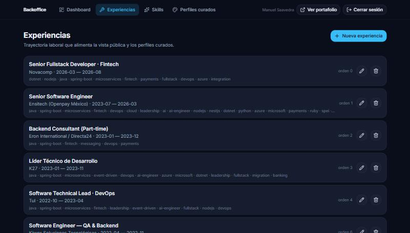
Cada fila con su empresa, periodo, tags y orden.
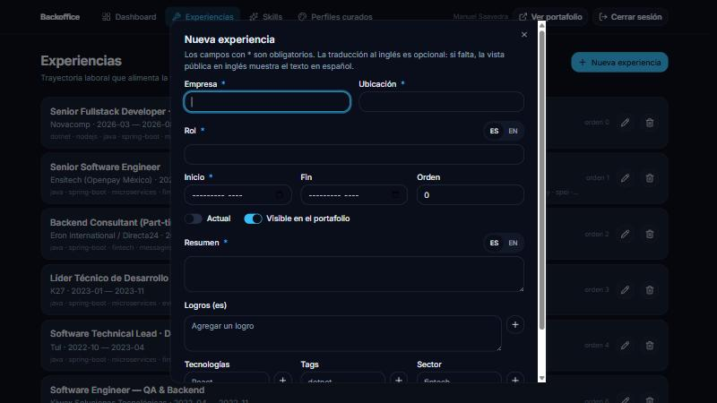
Los campos bilingües llevan conmutador ES/EN. Logros (es) no lo tiene: la limitación de abajo, a la vista.
Limitación actual. El formulario expone los logros solo en español. El inglés se conserva al guardar, pero no se puede editar desde el panel. Lo resuelve el change add-bilingual-builder-parity.
TC-20
Mantener skills y categorías
pasa
Pasos · /admin/skills. Las skills viven dentro de categorías: nueva categoría con nombre bilingüe y orden, y dentro nueva skill con nombre, tags y orden. Una skill se mueve de categoría editando su campo de categoría.
Observado
POST categoría "Suite Cat" -> 201
POST skill "SuiteSkill" con tags=[suite-tag] -> 201
preview con filterTags=[suite-tag] -> la categoría entra por el tag de su skill
DELETE de la categoría -> se lleva sus skills
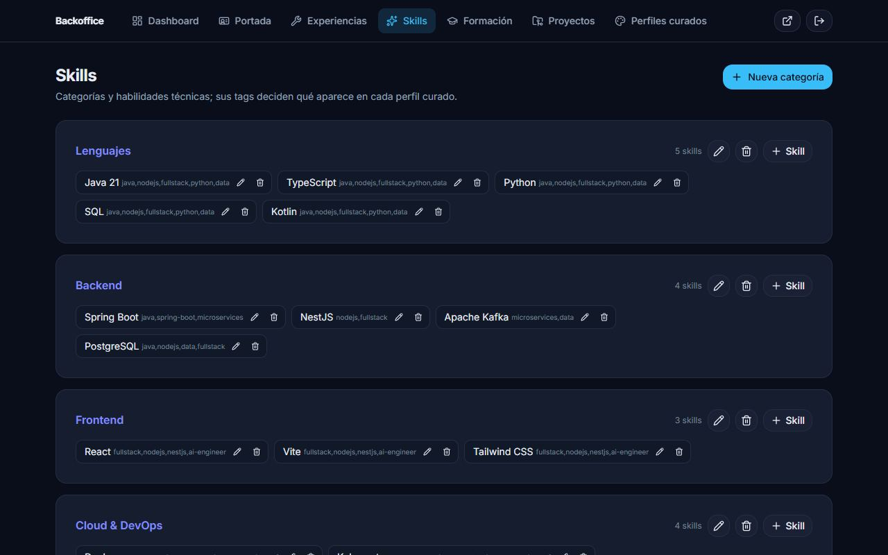
Cada skill lleva los tags que deciden en qué perfiles aparece.
Una categoría entra en un perfil curado si alguna de sus skills comparte un tag con filterTags; dentro, se muestran solo las skills que pasan el filtro.
TC-21
Duplicar un perfil para otra vacante
pasa
Pasos · /admin/perfiles → botón Duplicar de un perfil → confirmar.
Esperado · Una copia con toda la configuración (tags, inclusiones, exclusiones, secciones, tema y layout) y el constructor abierto sobre ella. La copia nace privada y no enumerada, sin token, sin visitas y sin archivar, con el slug del original más el primer sufijo libre (-2, -3, …). Para publicarla alcanza con cambiar slug, título, titular y visibilidad.
Observado · en la app real: duplicar tech-lead-dotnet dio /tech-lead-dotnet-2, privado; publicado como acme-tech-lead cambiando solo slug, título y titular, respondió 200 con sus 13 experiencias. El original quedó intacto.
Esperado · El link responde 404, igual que un slug que nunca existió, incluso con token si era PROTECTED. Sale del listado, del menú y del sitemap, pero conserva sus visitas, que siguen en el dashboard marcadas como archivado. Archivar dos veces conserva la primera fecha y no se registran visitas nuevas.
Archivar en lugar de borrar. Borrar se lleva las visitas; archivar las conserva y se puede deshacer. archivedAt no se escribe por PATCH (400).
Observado · en la app real: archivado acme-tech-lead con 3 visitas, el link dio 404, el panel pasó a Desarchivar sin recargar y el dashboard siguió mostrando sus 3 visitas.
TC-23
Un link dirigido que no aparece en ningún listado
pasa
Pasos · Pestaña Publicación → apagar Enumerar en la home y el sitemap → Guardar.
Esperado · El perfil sigue abriendo por su link (200 si es PUBLIC; 401 sin token y 200 con token si es PROTECTED), pero no figura en GET /api/curated-profiles, en el menú de la home ni en el sitemap.xml.
Los 13 perfiles del seed nacen enumerados, igual que antes: dejarlos de enumerar los retiraría de los buscadores. Es una decisión perfil por perfil.
TC-24
Renombrar un slug sin romper los links ya enviados
pasa
Pasos · Pestaña Identidad → cambiar el Slug → Guardar.
Esperado · El slug anterior sigue funcionando: responde el mismo perfil con su slug canónico en el cuerpo y en Content-Location, y el navegador corrige la URL solo. El sitemap y el canonical usan solo el slug nuevo. Tomar el slug anterior de otro perfil da 409; volver al propio borra el alias; el alias de un archivado también da 404.
Pasos · /admin/portada. Editar el titular o la fecha de inicio: la vista previa del hero cambia sin guardar, con su selector ES/EN. Guardar portada y el cambio se ve en / y en cada perfil curado, sin correr el seed. Los idiomas se administran en la misma página.
Observado
preview con startDate "Desde noviembre 2026" -> el badge cambia, nada se guarda
PUT /api/admin/profile -> 200; all, fullstack-nest-react y tech-lead-dotnet lo sirven
PUT con un campo desconocido -> 400 y el perfil queda idéntico
PUT con email vacío -> 400 y conserva el anterior
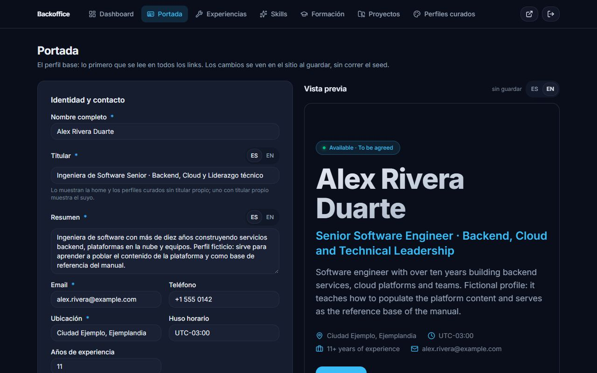
La vista previa la resuelve el backend con el mismo mapper que la ruta pública.
El titular base se ve en la home y en todo perfil curado sin titular propio (decisión D7). Las plantillas del seed traen el suyo y lo conservan; para volver al titular base, vaciá el del perfil en la pestaña Identidad.
TC-26
Formación: ocultar sin borrar
pasa
Pasos · /admin/formacion. Educación y certificaciones con lista y diálogo. Fechas YYYY-MM o YYYY; en curso excluye el fin. Desmarcar Visible en el sitio lo saca de la vista pública y lo deja en el panel con la marca Oculto.
PATCH {visible:false} -> fuera de /api/certifications, sigue en /api/admin/certifications
GET /api/admin/education -> incluye las ocultas, con visible y order
La formación del seed, editable desde el panel.
TC-27
Proyectos y enlaces sociales
pasa
Pasos · /admin/proyectos. Un proyecto con tags que coincidan con los filterTags de un perfil curado aparece en él con su url; «Sin enlace» marca los que todavía no la tienen. Los enlaces sociales llevan stats como JSON: un objeto, nunca un array.
POST proyecto con tags del perfil -> aparece en tech-lead-dotnet con su url
DELETE enlace social -> 204 y sale de /api/social-links
POST enlace con stats=[1,2] -> 400
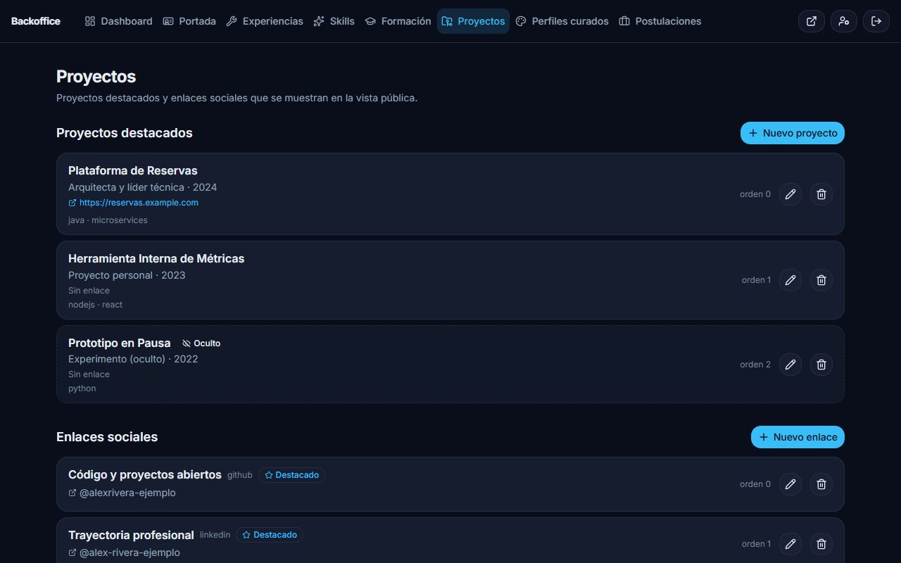
Los dos proyectos del seed, todavía sin enlace.
TC-28
El constructor avisa antes de descartar cambios
pasa
Pasos · /admin/perfiles/:id. Editar el Título de la pestaña Identidad y pulsar Volver (o un enlace del menú lateral, o Atrás): aparece Tenés cambios sin guardar y la página no se mueve. Seguir editando conserva lo escrito; Salir sin guardar navega y descarta. Recargar o cerrar la pestaña con cambios dispara el aviso nativo del navegador.
Esperado · Escribir y borrar el mismo carácter, o un espacio final, vuelve a «limpio». Cambiar solo el idioma del preview o archivar el perfil no cuentan como cambio. Un perfil nuevo sin tocar sale sin diálogo y un guardado exitoso deja la ficha limpia.
Observado
Título de tech-lead-dotnet editado -> Volver abre el aviso, sigue en /admin/perfiles/:id
Salir sin guardar -> /admin/perfiles, el título guardado sigue "Tech Lead .NET"
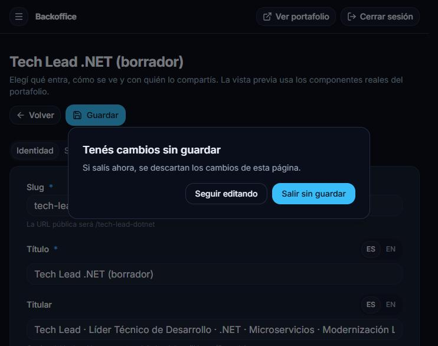
El aviso aparece sobre el constructor sin salir de la página.
El aviso nativo de beforeunload lo dibuja el navegador y no se capturó en la app real: lo cubren los tests del guardián y de ProfileBuilderPage.
TC-29
La Portada avisa; cambiar el idioma no
pasa
Pasos · /admin/portada. Con el formulario en Cambios sin guardar (por ejemplo, un titular editado), elegir Experiencias en el menú lateral: aparece el mismo aviso que en el constructor, con Seguir editando / Salir sin guardar.
Esperado · Cambiar el idioma de la vista previa (?lang=) con cambios pendientes no pide confirmación, porque solo cambia la query. Guardar portada deja la página limpia.
Observado · Se editó la Ubicación: cambiar el idioma de la vista previa (EN y de vuelta a ES) no abrió el aviso y la edición se conservó. Ir a Skills desde el menú lateral abrió «Tenés cambios sin guardar»; Salir sin guardar llevó a /admin/skills y la ubicación guardada siguió «Santa Cruz de la Sierra, Bolivia».
El aviso de la Portada es el mismo que el del constructor.
TC-30
Los formularios en diálogo avisan antes de descartar
pasa
Pasos · Cualquier formulario en diálogo: experiencia, categoría y skill, formación y certificación, proyecto, enlace social e idioma. Ejemplo: /admin/skills → Nueva categoría, escribir un nombre y cerrar con Escape, un clic fuera, la X o Cancelar.
Esperado · Aparece Tenés cambios sin guardar («Si lo cerrás ahora, se descartan los cambios de este formulario.») con el formulario abierto detrás. Seguir editando conserva los valores; Descartar cierra sin crear nada. Sin cambios cierra directo y guardar con éxito cierra sin aviso. Con cambios, recargar dispara el aviso nativo.
Observado
Skills > Nueva categoría > nombre escrito > Escape -> aviso con el formulario abierto detrás
Descartar -> cierra, la categoría no se crea
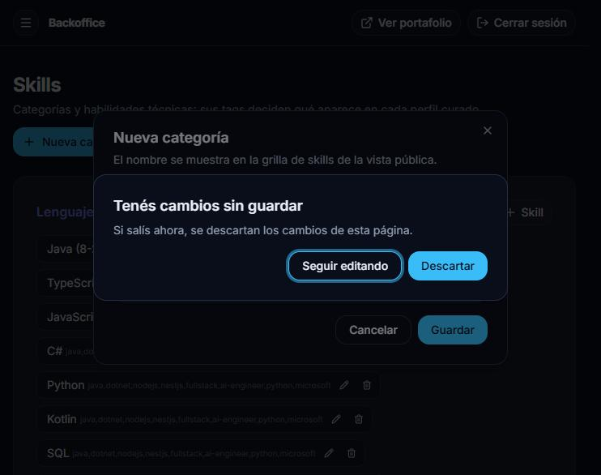
El aviso se monta sobre el formulario, que sigue abierto.
Atrás del navegador con un diálogo abierto no tiene aviso propio (decisión D11). En la app real se probó Escape; clic fuera, X y Cancelar los cubren los tests del guardián y de cada página.
Defectos encontrados al ejecutar la suite
Los dos aparecieron al ejecutar estos casos por primera vez de punta a punta. Ninguno estaba reportado. Los dos están corregidos; quedan documentados acá porque la suite los sigue cubriendo.
D-01
El dashboard nunca muestra las visitas de hoy
corregido
Severidad · Alta, visible para el usuario.
Síntoma · Se compartía un link, alguien lo abría, y el dashboard seguía en cero hasta el día siguiente.
Causa · El parámetro to de GET /api/admin/analytics/views se interpretaba como un instante: to=2026-10-05 era la medianoche de ese día. frontend/src/features/backoffice/dashboard/ranges.ts construye un rango cerrado[hoy - (días - 1), hoy], así que el to = hoy del panel dejaba fuera el día en curso.
GET /api/admin/analytics/views?from=2026-10-05&to=2026-10-05 -> total=0
GET /api/admin/analytics/views?from=2026-10-05&to=2026-10-06 -> total=13, byDay={2026-10-05:13}
Arreglo aplicado · El rango es cerrado en la API. Una fecha sin hora se toma al borde del día en UTC (inicio para from, último milisegundo para to) y un instante completo se respeta tal cual. La lógica vive en backend/src/modules/analytics/domain/services/range-boundaries.ts. Se descartó que el frontend mandara to = mañana, porque dejaba la API mintiendo sobre su propio contrato.
Regresión · range-boundaries.spec.ts y un caso e2e en admin.e2e-spec.ts: una visita recién registrada aparece en ?from=hoy&to=hoy. Sin el arreglo da total=0.
D-02
Omitir un objeto obligatorio devuelve 500 en lugar de 400
corregido
Severidad · Media; solo afecta endpoints autenticados del panel.
Síntoma · Un cuerpo al que le faltaba un campo obligatorio anidado respondía 500 Error interno del servidor en vez de un 400 que dijera qué falta.
Causa · Los campos obligatorios de tipo objeto se declaran con @ValidateNested() + @Type() pero sin @IsDefined(). class-validator no valida un valor undefined, así que la validación pasa y el mapper revienta con TypeError: Cannot read properties of undefined (reading 'en').
Arreglo aplicado · @IsDefined() en los cinco campos de este tipo: role y summary (experiencias), title y headline (perfiles curados) y name (categorías de skills). Los PATCH no cambian, porque PartialType agrega @IsOptional(). Después del arreglo:
POST /api/admin/experiences sin "summary" -> 400 ["summary should not be null or undefined"]
POST /api/admin/experiences sin "role" -> 400 ["role should not be null or undefined"]
POST /api/admin/curated-profiles sin "title" -> 400 ["title should not be null or undefined"]
POST /api/admin/curated-profiles sin "headline" -> 400 ["headline should not be null or undefined"]
POST /api/admin/skill-categories sin "name" -> 400 ["name should not be null or undefined"]
POST /api/admin/experiences completo -> 201 (control)
Desde add-profile-content-admin (D7), headline es opcional: sin él la creación da 201 y el hero usa el titular del perfil base. La línea de arriba queda como registro del defecto.
Regresión · backend/test/dto-validation.spec.ts, un test de comportamiento que exige un error por cada campo obligatorio de cada DTO de entrada (cuerpo vacío, campo ausente y campo en null). Sin el arreglo fallan 8 de sus 34 casos. Desde el PR #3 lo complementan una guarda estática en backend/test/security.spec.ts, que exige @IsDefined() en todo @ValidateNested() no opcional, y un e2e por HTTP de las seis omisiones.
El seed ya no es la forma de editar
Desde add-profile-content-admin, todo lo que el sitio muestra se edita en el panel. El seed queda para poblar una base vacía.
# Solo para una base vacía (o para volver al estado del CV a propósito)
cd backend && npm run seed && npm run seed:verify
seed sobrescribe. Sobre una base con contenido administrado desde el panel, pisa ese trabajo: portada, formación, proyectos, enlaces, experiencias y skills. Antes de correrlo en producción, hacé el pg_dump del § 7 de DEPLOY.md.
Los cinco temas siguen viniendo del seed: el customizador por perfil cubre la necesidad real.
Operación
Salud de la API, cómo seguir un error concreto y qué hacer en las situaciones que más se repiten.
# ¿Vive y ve la base?
curl -s $API/health | jq # 200, o 503 si Postgres no responde
curl -s $API/health/live # 200 mientras viva el proceso, sin tocar la base
# Seguir un error concreto: cada respuesta de error trae requestId,
# y el mismo id está en la cabecera X-Request-Id y en el log.
curl -sD - $API/api/curated-profiles/no-existe -o /dev/null | grep -i x-request-id
Situación
Qué hacer
Olvidaste la contraseña del admin
npm run admin:bootstrap con ADMIN_PASSWORD nuevo
Rotar el JWT_SECRET
cambiá la variable y redesplegá: invalida todas las sesiones
Un perfil quedó mal publicado
pasalo a PRIVATE (404 al instante) y arreglalo con calma
Perdiste datos
restaurá del backup, § 7 de DEPLOY.md
Deploy roto
Rollback en Deployments, dentro de las 72 h del plan Hobby
El sitio dejó de cargar algo (fuente, script) tras un deploy
La CSP del servicio web lo bloquea. Probá con CSP_HEADER=Content-Security-Policy-Report-Only en web (solo reporta, sin reconstruir) y mirá la consola. Detalle en DEPLOY.md § 9.5
Una visita no suma justo después de un deploy
La visita se registra en segundo plano y el apagado espera hasta 5 s; confirmá que RAILWAY_DEPLOYMENT_DRAINING_SECONDS del servicio api esté por encima (p. ej. 10)
Receta completa: de la vacante al link
Seis llamadas a la API que recorren el caso de punta a punta: crear en privado, elegir qué entra, probar sin tocar nada, ajustar, publicar y comprobar.
# 1. Crear en privado
ID=$(curl -s -X POST $API/api/admin/curated-profiles -H "$AUTH" -H 'Content-Type: application/json' -d '{
"slug":"acme-tech-lead",
"title":{"es":"Tech Lead .NET","en":"Tech Lead .NET"},
"headline":{"es":"14 años en .NET y liderazgo","en":"14 years in .NET and leadership"},
"roleType":{"es":"Tech Lead","en":"Tech Lead"},"techFocus":".NET","visibility":"PRIVATE"}' | jq -r .id)
# 2. Ver qué tags hay
curl -s $API/api/admin/experiences -H "$AUTH" | jq -r '[.[].tags[]]|unique|join(", ")'
# 3. Probar el filtro sin tocar nada
curl -s -X POST $API/api/admin/curated-profiles/preview -H "$AUTH" -H 'Content-Type: application/json' \
-d '{"title":{"es":"x","en":"x"},"headline":{"es":"x","en":"x"},"filterTags":["dotnet"]}' \
| jq '.experiences | length'
# 4. Aplicar filtro, secciones y tema
curl -s -X PATCH $API/api/admin/curated-profiles/$ID -H "$AUTH" -H 'Content-Type: application/json' -d '{
"filterTags":["dotnet","leadership"],
"sectionsOrder":["hero","experience","skills","projects","contact"],
"sectionsHidden":["education"],
"themeOverrides":{"colors":{"accent":"#5B2C87"}},
"layout":"sidebar"}' > /dev/null
# 5. Publicar
curl -s -X PATCH $API/api/admin/curated-profiles/$ID -H "$AUTH" -H 'Content-Type: application/json' \
-d '{"visibility":"PUBLIC"}' | jq .visibility
# 6. Comprobar y compartir
curl -s -o /dev/null -w '%{http_code}\n' $API/api/curated-profiles/acme-tech-lead
echo "$SITIO/acme-tech-lead"
Antes de empezar. Necesitás $API, $AUTH y $SITIO: se arman en Entorno y puertos.
Los tres ejes, al final de la receta (TC-16): la visibilidad decide quién puede abrirlo; la enumeración decide si aparece en la home y el sitemap, y para un envío a una sola empresa se usa {"listed": false} (TC-23); el archivado decide si sigue vivo, y cuando la vacante se cierra se archiva: el link da 404 y las visitas se conservan (TC-22).
Atajo: para la próxima vacante parecida, duplicá este perfil (TC-21) y ajustá slug, título y titular.
Qué falla y por qué
Síntoma
Causa
401 en todo el panel
la cookie expiró, o JWT_SECRET cambió. Volvé a entrar
429 al entrar
5 intentos por minuto y por IP. Esperá el Retry-After
El perfil ignora un includeIds
la experiencia tiene visible: false
Una sección aparece aunque no la puse en el orden
tiene datos: se agrega al final. Para ocultarla, sectionsHidden
Una sección no aparece aunque la puse
no tiene datos que pasen el filtro
400 al crear un perfil
campo de más o faltante: el pipe rechaza lo que no está en el DTO
409 al crear un perfil
el slug ya existe
El ?token= no funciona
el perfil es PRIVATE, no PROTECTED. PRIVATE siempre da 404
La vista previa en LinkedIn es genérica
el borde no insertó el head del perfil: la API no respondió en 500 ms y el sitio degradó al genérico, o el perfil no es PUBLIC (a propósito: PROTECTED y PRIVATE nunca exponen sus textos). Comprobar con curl -s <sitio>/<slug> | grep og:title. La imagen es la misma para todos los perfiles.
El nuevo perfil no está en el sitemap
solo entran los PUBLIC, enumerados y no archivados. Un duplicado nace PRIVATE y no enumerado
El link que mandé da 404
el perfil está archivado (TC-22) o es PRIVATE. La pestaña Publicación lo advierte
Un perfil público no aparece en el menú
no está enumerado (listed: false), o se está mirando un /:slug: el menú solo se muestra en la home
Renombré un slug y el link viejo sigue respondiendo
a propósito: el slug anterior queda como alias del nuevo (TC-24)
409 al usar un slug que nadie tiene
es el slug anterior de otro perfil
400 al mandar archivedAt
no se escribe por PATCH: usar /archive y /unarchive
docker compose up falla por el puerto
otro Postgres ocupa el 5434: POSTGRES_PORT=5555 docker compose up -d